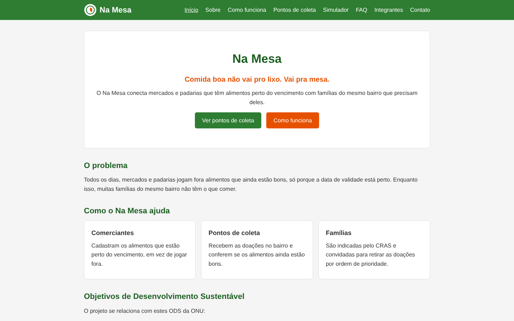
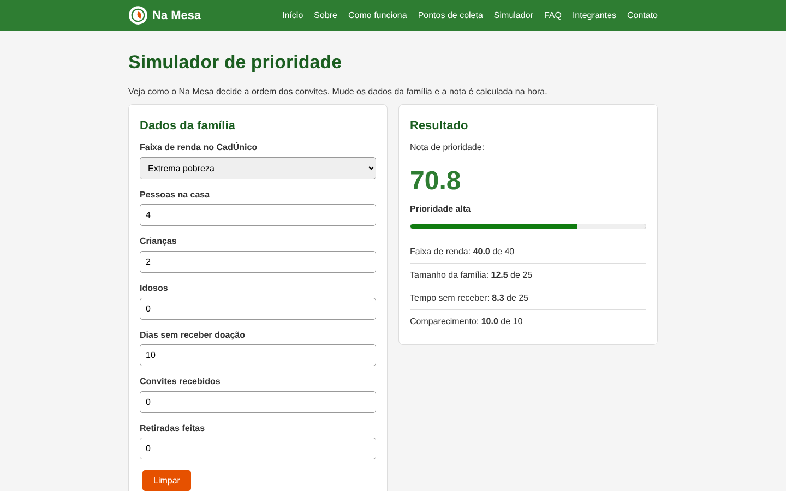
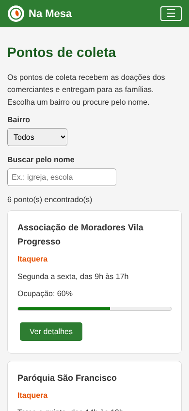

Comerciantes
Cadastram os alimentos que estão perto do vencimento, em vez de jogar fora.
Todos os dias, mercados e padarias jogam fora alimentos que ainda estão bons, só porque a data de validade está perto. Enquanto isso, muitas famílias do mesmo bairro não têm o que comer.
Cadastram os alimentos que estão perto do vencimento, em vez de jogar fora.
Recebem as doações no bairro e conferem se os alimentos ainda estão bons.
São indicadas pelo CRAS e convidadas para retirar as doações por ordem de prioridade.
O projeto se relaciona com estes ODS da ONU:


